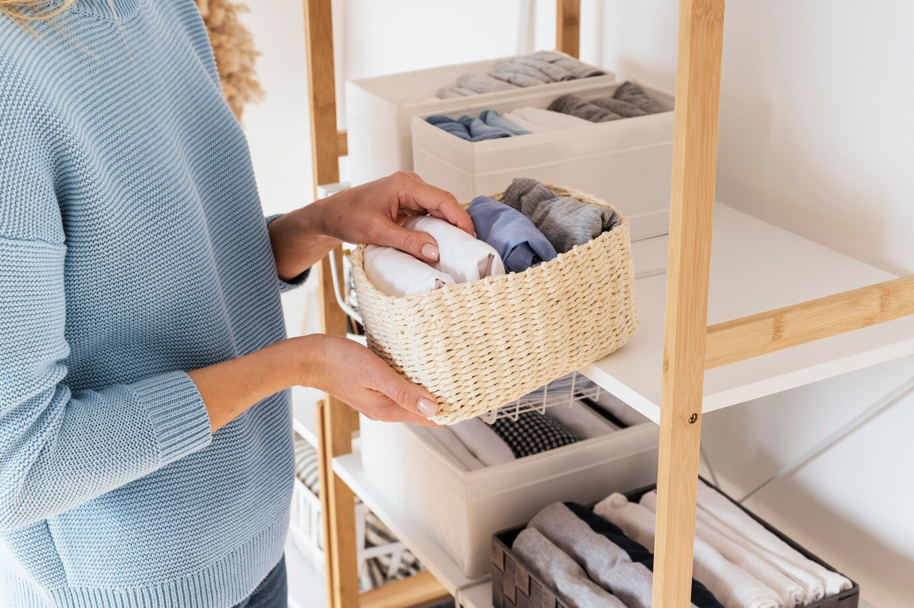
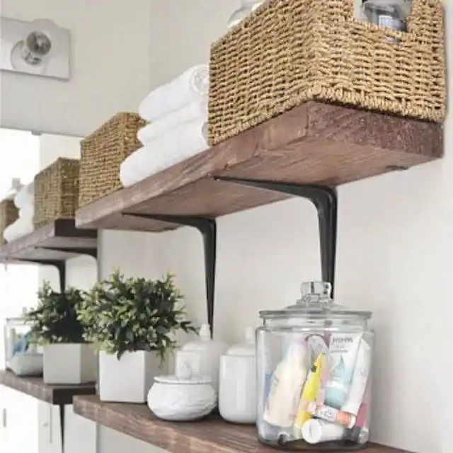

Conseils pour garder sa maison propre et organisée
- Consacrez quelques minutes chaque jour pour faire des petites tâches de nettoyage comme faire son lit, ranger les objets, ou essuyer les surfaces.
- Prenez l'habitude de ranger vos affaires après les avoir utilisées. Ça évite le désordre et vous savez toujours où trouver ce dont vous avez besoin.
- Choisissez des produits qui conviennent à ce que vous nettoyez, et si possible, optez pour des solutions simples comme le vinaigre ou le bicarbonate de soude.
- Impliquez toute la famille dans le nettoyage. Chacun peut faire sa part selon ses capacités, même les enfants peuvent aider en rangeant leurs jouets.
- Traitez les taches dès qu'elles apparaissent et réparez ce qui est cassé pour éviter que les problèmes ne s'aggravent.
- Ouvrez les fenêtres de temps en temps pour renouveler l'air dans la maison, ça aide à éliminer les odeurs et à garder l'air frais.
- Utilisez des boîtes, des étagères et des paniers pour ranger vos affaires, ça rend plus facile de trouver ce dont vous avez besoin et de garder tout en ordre.
- Garder une maison propre demande du temps et de la constance, donc soyez patient avec vous-même et avec les autres membres de la famille.

Voici quelques sites que nous recommandons :
- Les tâches d'une femme de ménage
- La liste des indispensables pour l’entretien et le nettoyage de toute la maison
- Comment organiser sa maison
- Produit Naturel nettoyant
- Etape pour nettoyer une salle de bain
